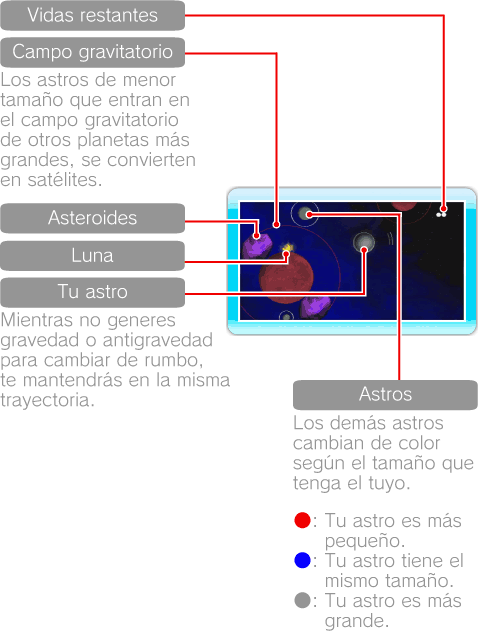
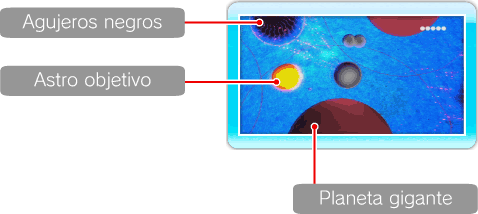
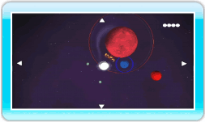

9 |
Pantalla de juego |
 |
Solo aparecen en pantalla las inmediaciones de tu posición. Dentro de una fase, todas las direcciones están conectadas, y si te mueves durante un tiempo en una misma dirección, vuelves al punto de donde habías partido. 


● Mapa de la fase Pulsa 
● Menú de pausa Si pulsas
Nota: Se te restaurarán las vidas si seleccionas RETRY o SELECT STAGE. |
 durante la partida para echar un vistazo al mapa. Utiliza
durante la partida para echar un vistazo al mapa. Utiliza  para desplazarte por el mapa y vuelve a pulsar
para desplazarte por el mapa y vuelve a pulsar  |
 |
 |